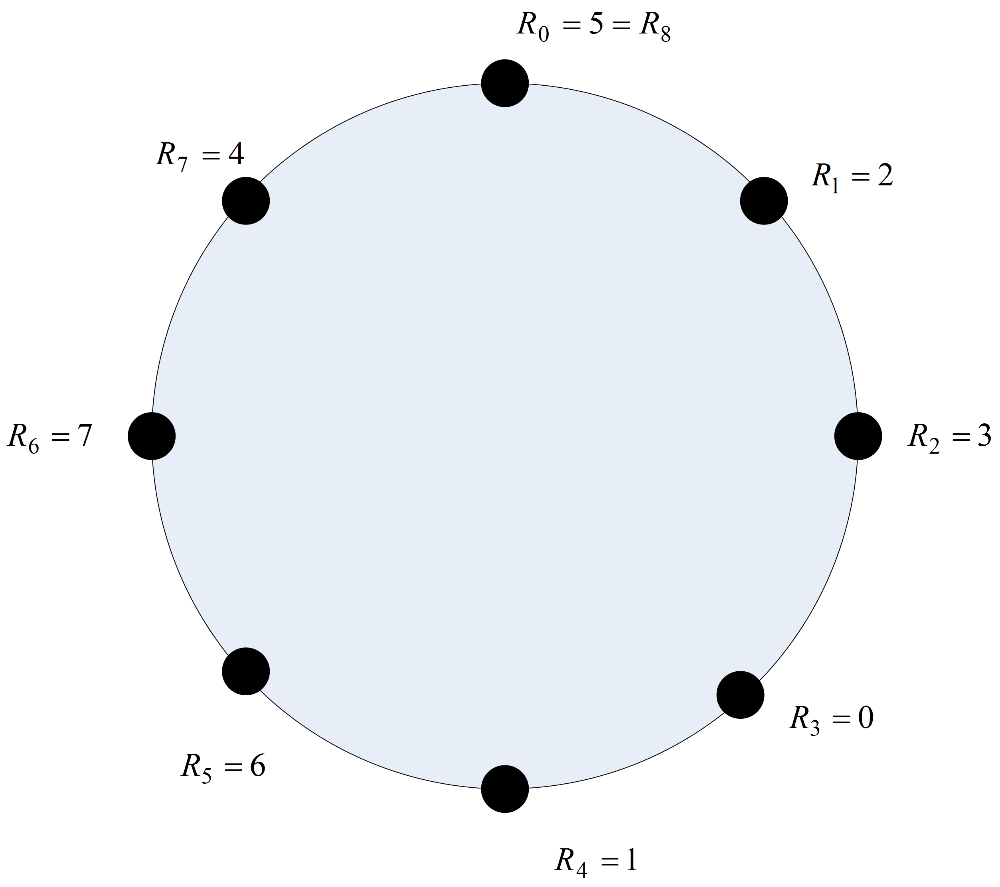
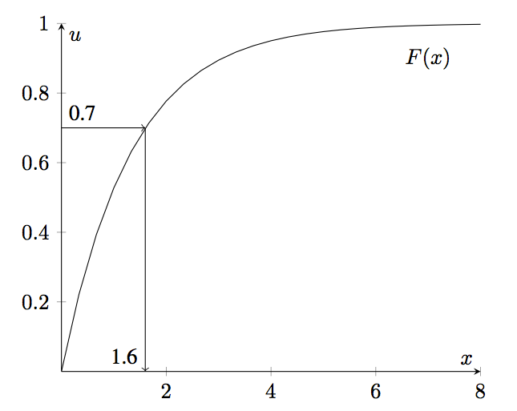
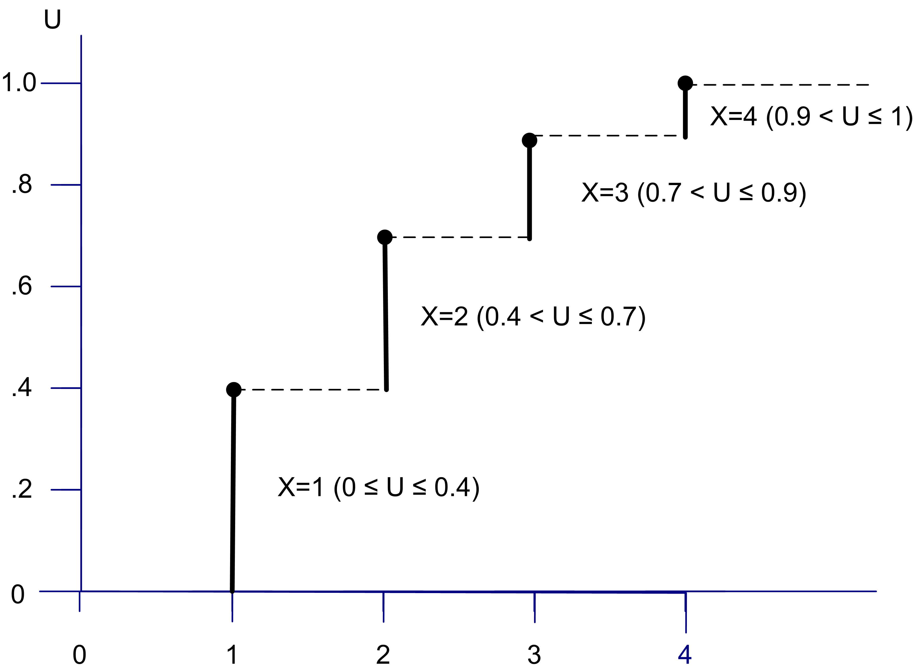
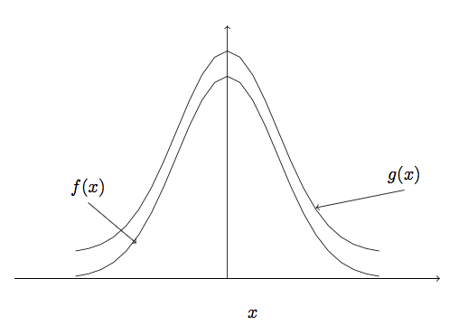
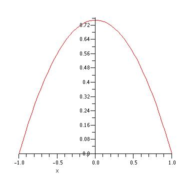

Appendix A — Generating Pseudo-Random Numbers and Random Variates
Learning Objectives
To be able to describe and use linear congruential pseudo-random number generation methods
To be aware of current state of the art pseudo-random number generation methods
To be able to define and use key terms in pseudo-random number generation methods such as streams, seeds, period, etc.
To be able to explain the key issues in pseudo-random number testing
To be able to derive and implement an inverse cumulative distribution function based random variate generation algorithm
To be able to explain and implement the convolution algorithm for random variate generation
To be able to explain and implement the acceptance rejection algorithm for random variate generation
Randomness in simulation is often modeled by using random variables and probability distributions. Thus, simulation languages require the ability to generate random variates. A random variate is an instance (or realization) of a random variable. In this section, you will learn how simulation languages allow for the generation of randomness. Generating randomness requires algorithms that permit sequences of numbers to act as the underlying source of randomness within the model. Then, given a good source of randomness, techniques have been established that permit the sequences to be transformed so that they can represent a wide variety of random variables (e.g. normal, Poisson, etc.). The algorithms that govern these procedures are described in the second part of this chapter.
A.1 Pseudo Random Numbers
This section indicates how uniformly distributed random numbers over the range from 0 to 1 are obtained within simulation programs. While commercial simulation packages provide substantial capabilities for generating random numbers, we still need to understand how this process works for the following reasons:
The random numbers within a simulation experiment might need to be controlled in order to take advantage of them to improve decision making.
In some situations, the commercial package does not have ready made functions for generating the desired random variables. In these situations, you will have to implement an algorithm to generate the random variates.
In addition, simulation is much broader than just using a commercial package. You can perform simulation in any computer language and spreadsheets. The informed modeler should know how the key inputs to simulation models are generated.
In simulation, large amount of cheap (easily computed) random numbers are required. In general, consider how random numbers might be obtained:
Dice, coins, colored balls
Specially designed electronic equipment
Algorithms
Clearly, within the context of computer simulation, it might be best to rely on algorithms; however, if an algorithm is used to generate the random numbers then they will not be truly random. For this reason, the random numbers that are used in computer simulation are called pseudo random.
Definition A.1 (Pseudo-Random Numbers) A sequence of pseudo-random numbers, \(U_{i}\), is a deterministic sequence of numbers in \((0,1)\) having the same relevant statistical properties as a sequence of truly random \(U(0,1)\) numbers.((Ripley 1987))
A set of statistical tests are performed on the pseudo-random numbers generated from algorithms in order to indicate that their properties are not significantly different from a true set of \(U(0,1)\) random numbers. The algorithms that produce pseudo-random numbers are called random number generators. In addition to passing a battery of statistical tests, the random number generators need to be fast and they need to be able to reproduce a sequence of numbers if and when necessary.
The following section discusses random number generation methods. The approach will be practical, with just enough theory to motivate future study of this area and to allow you to understand the important implications of random number generation. A more rigorous treatment of random number and random variable generation can be found such texts as (Fishman 2006) and (Devroye 1986).
A.1.1 Random Number Generators
Over the history of scientific computing, there have been a wide variety of techniques and algorithms proposed and used for generating pseudo-random numbers. A common technique that has been used (and is still in use) within a number of simulation environments is discussed in this text. Some new types of generators that have been recently adopted within many simulation environments, especially the one used within the JSL and Arena, will also be briefly discussed.
A linear congruential generator (LCG) is a recursive algorithm for producing a sequence of pseudo random numbers. Each new pseudo random number from the algorithm depends on the previous pseudo random number. Thus, a starting value called the seed is required. Given the value of the seed, the rest of the sequence of pseudo random numbers can be completely determined by the algorithm. The basic definition of an LCG is as follows
Definition A.2 (Linear Congruential Generator) A LCG defines a sequence of integers, \(R_{0}, R_{1}, \ldots\) between \(0\) and \(m-1\) according to the following recursive relationship:
\[ R_{i+1} = \left(a R_{i} + c\right)\bmod m \]
where \(R_{0}\) is called the seed of the sequence, \(a\) is called the constant multiplier, \(c\) is called the increment, and \(m\) is called the modulus. \(\left(m, a, c, R_{0}\right)\) are integers with \(a > 0\), \(c \geq 0\), \(m > a\), \(m > c\), \(m > R_{0}\), and \(0 \leq R_{i} \leq m-1\).
To compute a corresponding pseudo-random uniform number, we use
\[ U_{i} = \frac{R_{i}}{m} \]
Notice that an LCG defines a sequence of integers and subsequently a sequence of real (rational) numbers that can be considered pseudo random numbers. Remember that pseudo random numbers are those that can “fool” a battery of statistical tests. The choice of the seed, constant multiplier, increment, and modulus, i.e. the parameters of the LCG, will determine the properties of the sequences produced by the generator. With properly chosen parameters, an LCG can be made to produce pseudo random numbers. To make this concrete, let’s look at a simple example of an LCG.
Example A.1 (Simple LCG Example) Consider an LCG with the following parameters \((m = 8\), \(a = 5\), \(c = 1\), \(R_{0} = 5)\). Compute the first nine values for \(R_{i}\) and \(U_{i}\) from the defined sequence.
Let’s first remember how to compute using the \(\text{mod}\) operator. The \(\text{mod}\) operator is defined as:
\[ z = y \bmod m = y - m \left \lfloor \dfrac{y}{m} \right \rfloor \]
where \(\lfloor x \rfloor\) is the floor operator, which returns the greatest integer that is less than or equal to \(x\). For example,
\[ \begin{split} z & = 17 \bmod 3 \\ & = 17 - 3 \left \lfloor \frac{17}{3} \right \rfloor \\ & = 17 - 3 \lfloor 5.\overline{66} \rfloor \\ & = 17 - 3 \times 5 = 2 \end{split} \]
Thus, the \(\text{mod}\) operator returns the integer remainder (including zero) when \(y \geq m\) and \(y\) when \(y < m\). For example, \(z = 6 \bmod 9 = 6 - 9 \left\lfloor \frac{6}{9} \right\rfloor = 6 - 9 \times 0 = 6\).
Using the parameters of the LCG, the pseudo-random numbers are:
\[ \begin{split} {R_1} & = (5{R_0} + 1)\bmod 8 = 26\bmod 8 = 2 \Rightarrow {U_1} = 0.25 \\ {R_2} & = (5{R_1} + 1)\bmod 8 = 11\bmod 8 = 3 \Rightarrow {U_2} = 0.375 \\ {R_3} & = (5{R_2} + 1)\bmod 8 = 16\bmod 8 = 0 \Rightarrow {U_3} = 0.0 \\ {R_4} & = (5{R_3} + 1)\bmod 8 = 1\bmod 8 = 1 \Rightarrow {U_4} = 0.125 \\ {R_5} & = 6 \Rightarrow {U_5} = 0.75 \\ {R_6} & = 7 \Rightarrow {U_6} = 0.875 \\ {R_7} & = 4 \Rightarrow {U_7} = 0.5 \\ {R_8} & = 5 \Rightarrow {U_8} = 0.625 \\ {R_9} & = 2 \Rightarrow {U_9} = 0.25 \end{split} \]
In the previous example, the \(U_{i}\) are simple fractions involving \(m = 8\). Certainly, this sequence does not appear very random. The \(U_{i}\) can only take on rational values in the range, \(0,\tfrac{1}{m}, \tfrac{2}{m}, \tfrac{3}{m}, \ldots, \tfrac{(m-1)}{m}\) since \(0 \leq R_{i} \leq m-1\). This implies that if \(m\) is small there will be gaps on the interval \(\left[0,1\right)\), and if \(m\) is large then the \(U_{i}\) will be more densely distributed on \(\left[0,1\right)\).
Notice that if a sequence generates the same value as a previously generated value then the sequence will repeat or cycle. An important property of a LCG is that it has a long cycle, as close to length \(m\) as possible. The length of the cycle is called the period of the LCG. Ideally the period of the LCG is equal to \(m\). If this occurs, the LCG is said to achieve its full period. As can be seen in the example, the LCG is full period. Until recently, most computers were 32 bit machines and thus a common value for \(m\) is \(2^{31} - 1 = 2,147,483,647\), which represents the largest integer number on a 32 bit computer using 2’s complement integer arithmetic. This choice of \(m\) also happens to be a prime number, which leads to special properties.
A proper choice of the parameters of the LCG will allow desirable pseudo random number properties to be obtained. The following result due to (Hull and Dobell 1962), see also (Law 2007), indicates how to check if a LCG will have the largest possible cycle.
Theorem A.1 (LCG Theorem) An LCG has full period if and only if the following three conditions hold: (1) The only positive integer that (exactly) divides both \(m\) and \(c\) is 1 (i.e. \(c\) and \(m\) have no common factors other than 1), (2) If \(q\) is a prime number that divides \(m\) then \(q\) should divide \((a-1)\). (i.e. \((a-1)\) is a multiple of every prime number that divides \(m\)), and (3) If 4 divides \(m\), then 4 should divide \((a-1)\). (i.e. \((a-1)\) is a multiple of 4 if \(m\) is a multiple of 4)
Now, let’s apply this theorem to the example LCG and check whether or not it should obtain full period. To apply the theorem, you must check if each of the three conditions holds for the generator.
Condition 1: \(c\) and \(m\) have no common factors other than 1.
The factors of \(m=8\) are \((1, 2, 4, 8)\), since \(c=1\) (with factor 1) condition 1 is true.Condition 2: \((a-1)\) is a multiple of every prime number that divides \(m\). The first few prime numbers are (1, 2, 3, 5, 7). The prime numbers, \(q\), that divide \(m=8\) are \((q =1, 2)\). Since \(a=5\) and \((a-1)=4\), clearly \(q = 1\) divides \(4\) and \(q = 2\) divides \(4\). Thus, condition 2 is true.
Condition 3: If \(4\) divides \(m\), then \(4\) should divide \((a-1)\).
Since \(m=8\), clearly \(4\) divides \(m\). Also, \(4\) divides \((a-1)= 4\). Thus, condition 3 holds.
Since all three conditions hold, the LCG achieves full period.
The theorem only tells us when a specification of \((a, c, m)\) will obtain full period. In case (3), it does not tell us anything about what happens if \(4\) does not divide \(m\), If \(4\) divides \(m\), and we pick \(a\) so that it divides \((a-1)\) then the condition will be met. If \(4\) does not divide \(m\), then the theorem really does not tell us one way or the other whether the LCG obtains full period.
There are some simplifying conditions, see Banks et al. (2005), which allow for easier application of the theorem. For \(m = 2^{b}\), (\(m\) a power of 2) and \(c\) not equal to 0, the longest possible period is \(m\) and can be achieved provided that \(c\) is chosen so that the greatest common factor of \(c\) and \(m\) is 1 and \(a=4k+1\) where \(k\) is an integer. The previous example LCG satisfies this situation.
For \(m = 2^{b}\) and \(c = 0\), the longest possible period is \((m/4)\) and can be achieved provided that the initial seed, \(R_{0}\) is odd and \(a=8k + 3\) or \(a=8k + 5\) where \(k = 0, 1, 2,\cdots\).
The case of \(m\) a prime number and \(c = 0\), defines a special case of the LCG called a prime modulus multiplicative linear congruential generator (PMMLCG). For this case, the longest possible period is \(m-1\) and can be achieved if the smallest integer, \(k\), such that \(a^{k} -1\) is divisible by \(m\) is \(m-1\).
Thirty-Two bit computers have been very common for over 20 years. In addition, \(2^{31} - 1\) = \(2,147,483,647\) is a prime number. Because of this, \(2^{31} - 1\) has been the choice for \(m\) with \(c=0\). Two common values for the multiplier, \(a\), have been:
\[ \begin{split} a & = 630,360,016\\ a & = 16,807\\ \end{split} \]
The latter of which was used within many simulation packages for a number of years. Notice that for PMMLCG’s the full period cannot be achieved (because \(c=0\)), but with the proper selection of the multiplier, the next best period length of \(m-1\) can be obtained. In addition, for this case \(R_{0} \in \lbrace 1, 2,\ldots , m-1\rbrace\) and thus \(U_{i} \in (0,1)\). The limitation of \(U_{i} \in (0,1)\) is very useful when generating random variables from various probability distributions, since \(0\) cannot be realized. When using an LCG, you must supply a starting seed as an initial value for the algorithm. This seed determines the sequence that will come out of the generator when it is called within software. Since generators cycle, you can think of the sequence as a big circular list as indicated in Figure A.1.

Starting with seed \(R_{0} = 5\), you get a sequence \(\{2, 3, 0, 1, 6, 7, 4, 5\}\). Starting with seed, \(R_{0}=1\), you get the sequence \(\{6, 7, 4, 5, 2, 3, 0, 1\}\). Notice that these two sequences overlap with each other, but that the first half \(\{2, 3, 0, 1\}\) and the second half \(\{6, 7, 4, 5\}\) of the sequence do not overlap. If you only use 4 random numbers from each of these two subsequences then the numbers will not overlap. This leads to the definition of a stream:
Definition A.3 (Stream) The subsequence of random numbers generated from a given seed is called a random number stream.
You can take the sequence produced by the random number generator and divide it up into subsequences by associating certain seeds with streams. You can call the first subsequence stream 1 and the second subsequence stream 2, and so forth. Each stream can be further divided into subsequences or sub-streams of non-overlapping random numbers.
In this simple example, it is easy to remember that stream 1 is defined by seed, \(R_{0} = 5\), but when \(m\) is large, the seeds will be large integer numbers, e.g. \(R_{0} = 123098345\). It is difficult to remember such large numbers. Rather than remember this huge integer, an assignment of stream numbers to seeds is made. Then, the sequence can be reference by its stream number. Naturally, if you are going to associate seeds with streams you would want to divide the entire sequence so that the number of non-overlapping random numbers in each stream is quite large. This ensures that as a particular stream is used that there is very little chance of continuing into the next stream. Clearly, you want \(m\) to be as large as possible and to have many streams that contain as large as possible number of non-overlapping random numbers. With today’s modern computers even \(m\) is \(2^{31} - 1 = 2,147,483,647\) is not very big. For large simulations, you can easily run through all these random numbers.
Random number generators in computer simulation languages come with a default set of streams that divide the “circle” up into independent sets of random numbers. The streams are only independent if you do not use up all the random numbers within the subsequence. These streams allow the randomness associated with a simulation to be controlled. During the simulation, you can associate a specific stream with specific random processes in the model. This has the advantage of allowing you to check if the random numbers are causing significant differences in the outputs. In addition, this allows the random numbers used across alternative simulations to be better synchronized.
Now a common question for beginners using random number generators can be answered. That is, If the simulation is using random numbers, why to I get the same results each time I run my program? The corollary to this question is, If I want to get different random results each time I run my program, how do I do it? The answer to the first question is that the underlying random number generator is starting with the same seed each time you run your program. Thus, your program will use the same pseudo random numbers today as it did yesterday and the day before, etc. The answer to the corollary question is that you must tell the random number generator to use a different seed (or alternatively a different stream) if you want different invocations of the program to produce different results. The latter is not necessarily a desirable goal. For example, when developing your simulation programs, it is desirable to have repeatable results so that you can know that your program is working correctly. Unfortunately, many novices have heard about using the computer clock to “randomly” set the seed for a simulation program. This is a bad idea and very much not recommended in our context. This idea is more appropriate within a gaming simulation, in order to allow the human gamer to experience different random sequences.
Given current computing power, the previously discussed PMMLCGs are insufficient since it is likely that all the 2 billion or so of the random numbers would be used in performing serious simulation studies. Thus, a new generation of random number generators was developed that have extremely long periods. The random number generator described in L’Ecuyer et al. (2002) is one example of such a generator. It is based on the combination of two multiple recursive generators resulting in a period of approximately \(3.1 \times 10^{57}\). This is the same generator that is now used in many commercial simulation packages. The generator as defined in (Law 2007) is:
\[ \begin{split} R_{1,i}&=(1,403,580 R_{1,i-2} - 810,728 R_{1,i-3})[\bmod (2^{32}-209)]\\ R_{2,i}&=(527,612R_{2,i-1} - 1,370,589 R_{2,i-3})[\bmod (2^{32}-22,853)]\\ Y_i &=(R_{1,i}-R_{2,i})[\bmod(2^{32}-209)]\\ U_i&=\frac{Y_i}{2^{32}-209} \end{split} \] The generator takes as its initial seed a vector of six initial values \((R_{1,0}, R_{1,1}, R_{1,2}, R_{2,0}, R_{2,1}, R_{2,2})\). The first initially generated value, \(U_{i}\), will start at index \(3\). To produce five pseudo random numbers using this generator we need an initial seed vector, such as: \[\lbrace R_{1,0}, R_{1,1}, R_{1,2}, R_{2,0}, R_{2,1}, R_{2,2} \rbrace = \lbrace 12345, 12345, 12345, 12345, 12345, 12345\rbrace\]
Using the recursive equations, the resulting random numbers are as follows:
| i=3 | i=4 | i=5 | i=6 | i=7 | |||
|---|---|---|---|---|---|---|---|
| \(Z_{1,i-3}=\) | 12345 | 12345 | 12345 | 3023790853 | 3023790853 | ||
| \(Z_{1,i-2}=\) | 12345 | 12345 | 3023790853 | 3023790853 | 3385359573 | ||
| \(Z_{1,i-1}=\) | 12345 | 3023790853 | 3023790853 | 3385359573 | 1322208174 | ||
| \(Z_{2,i-3}=\) | 12345 | 12345 | 12345 | 2478282264 | 1655725443 | ||
| \(Z_{2,i-2}=\) | 12345 | 12345 | 2478282264 | 1655725443 | 2057415812 | ||
| \(Z_{2,i-1}=\) | 12345 | 2478282264 | 1655725443 | 2057415812 | 2070190165 | ||
| \(Z_{1,i}=\) | 3023790853 | 3023790853 | 3385359573 | 1322208174 | 2930192941 | ||
| \(Z_{2,i}=\) | 2478282264 | 1655725443 | 2057415812 | 2070190165 | 1978299747 | ||
| \(Y_i=\) | 545508589 | 1368065410 | 1327943761 | 3546985096 | 951893194 | ||
| \(U_i=\) | 0.127011122076 | 0.318527565471 | 0.309186015655 | 0.82584686312 | 0.221629915834 |
While it is beyond the scope of this text to explore the theoretical underpinnings of this generator, it is important to note that the use of this new generator is conceptually similar to that which has already been described. The generator allows multiple independent streams to be defined along with sub-streams.
A random number stream is a sub-sequence of pseudo-random numbers that start at particular place with a larger sequence of pseudo-random numbers. The starting point of a sequence of pseudo-random numbers is called the seed. A seed allows us to pick a particular stream. Having multiple streams is useful to assign different streams to different sources of randomness within a model. Streams can be further divided into sub-streams. This facilitates the control of the use of pseudo-random numbers when performing experiments.
The fantastic thing about this generator is the sheer size of the period. Based on their analysis, L’Ecuyer et al. (2002) state that it will be “approximately 219 years into the future before average desktop computers will have the capability to exhaust the cycle of the (generator) in a year of continuous computing.” In addition to the period length, the generator has an enormous number of streams, approximately \(1.8 \times 10^{19}\) with stream lengths of \(1.7 \times 10^{38}\) and sub-streams of length \(7.6 \times 10^{22}\) numbering at \(2.3 \times 10^{15}\) per stream. Clearly, with these properties, you do not have to worry about overlapping random numbers when performing simulation experiments. The generator was subjected to a rigorous battery of statistical tests and is known to have excellent statistical properties. The subject of modeling and testing different distributions is deferred to a separate part of this book.
A.2 Generating Random Variates from Distributions
In simulation, pseudo random numbers serve as the foundation for generating samples from probability distribution models. We will now assume that the random number generator has been rigorously tested and that it produces sequences of \(U_{i} \sim U(0,1)\) numbers. We now want to take the \(U_{i} \sim U(0,1)\) and utilize them to generate from probability distributions.
The realized value from a probability distribution is called a random variate. Simulations use many different probability distributions as inputs. Thus, methods for generating random variates from distributions are required. Different distributions may require different algorithms due to the challenges of efficiently producing the random variables. Therefore, we need to know how to generate samples from probability distributions. In generating random variates the goal is to produce samples \(X_{i}\) from a distribution \(F(x)\) given a source of random numbers, \(U_{i} \sim U(0,1)\). There are four basic strategies or methods for producing random variates:
- Inverse transform or inverse cumulative distribution function (CDF) method
- Convolution
- Acceptance/Rejection
- Mixture and Truncated Distributions
The following sections discuss each of these methods.
A.2.1 Inverse Transform Method
The inverse transform method is the preferred method for generating random variates provided that the inverse transform of the cumulative distribution function can be easily derived or computed numerically. The key advantage for the inverse transform method is that for every \(U_{i}\) use a corresponding \(X_{i}\) will be generated. That is, there is a one-to-one mapping between the pseudo-random number \(u_i\) and the generated variate \(x_i\).
The inverse transform technique utilizes the inverse of the cumulative distribution function as illustrated in Figure A.2, will illustrates simple cumulative distribution function. First, generate a number, \(u_{i}\) between 0 and 1 (along the \(U\) axis), then find the corresponding \(x_{i}\) coordinate by using \(F^{-1}(\cdot)\). For various values of \(u_{i}\), the \(x_{i}\) will be properly ‘distributed’ along the x-axis. The beauty of this method is that there is a one to one mapping between \(u_{i}\) and \(x_{i}\). In other words, for each \(u_{i}\) there is a unique \(x_{i}\) because of the monotone property of the CDF.

The idea illustrated in Figure A.2 is based on the following theorem.
Theorem A.2 (Inverse Transform) Let \(X\) be a random variable with \(X \sim F(x)\). Define another random variable \(Y\) such that \(Y = F(X)\). That is, Y is determined by evaluating the function \(F(\cdot)\) at the value \(X\). If \(Y\) is defined in this manner, then \(Y \sim U(0,1)\).
The proof utilizes the definition of the cumulative distribution function to derive the CDF for \(Y\).
\[ \begin{split} F(y) & = P\left\{Y \leq y \right\} \\ & = P\left\{F(X) \leq y\right\} \; \text{substitute for } Y \\ & = P\left\{F^{-1}(F(X)) \leq F^{-1}(y)\right\} \; \text{apply inverse} \\ & = P\left\{X \leq F^{-1}(y)\right\} \; \text{definition of inverse} \\ & = F(F^{-1}(y)) \; \text{definition of CDF}\\ & = y \; \text{definition of inverse} \end{split} \] Since \(P(Y \leq y) = y\) defines a \(U(0,1)\) random variable, the proof is complete.
This result also works in reverse if you start with a uniformly distributed random variable then you can get a random variable with the distribution of \(F(x)\). The idea is to generate \(U_{i} \sim U(0,1)\) and then to use the inverse cumulative distribution function to transform the random number to the appropriately distributed random variate.
Let’s assume that we have a function, randU01(), that will provide pseudo-random numbers on the range (0,1). Then, the following presents the pseudo-code for the inverse transform algorithm.
2. \(x = F^{-1}(u)\)
3. return \(x\)
Line 1 generates a uniform number. Line 2 takes the inverse of \(u\) and line 3 returns the random variate. The following example illustrates the inverse transform method for the exponential distribution.
The exponential distribution is often used to model the time until and event (e.g. time until failure, time until an arrival etc.) and has the following probability density function:
\[ f(x) = \begin{cases} 0.0 & \text{if} \left\{x < 0\right\}\\ \lambda e^{-\lambda x} & \text{if} \left\{x \geq 0 \right\} \\ \end{cases} \] with \[ \begin{split} E\left[X\right] &= \frac{1}{\lambda} \\ Var\left[X\right] &= \frac{1}{\lambda^2} \end{split} \]
Example A.2 (Generating Exponential Random Variates) Consider a random variable, \(X\), that represents the time until failure for a machine tool. Suppose \(X\) is exponentially distributed with an expected value of \(1.\overline{33}\). Generate a random variate for the time until the first failure using a uniformly distributed value of \(u = 0.7\).
Solution for Example A.2 In order to solve this problem, we must first compute the CDF for the exponential distribution. For any value, \(b < 0\), we have by definition:
\[ F(b) = P\left\{X \le b \right\} = \int_{ - \infty }^b f(x)\;dx = \int\limits_{ - \infty }^b {0 dx} = 0 \] For any value \(b \geq 0\),
\[ \begin{split} F(b) & = P\left\{X \le b \right\} = \int_{ - \infty }^b f(x)dx\\ & = \int_{ - \infty }^0 f(x)dx + \int\limits_0^b f(x)dx \\ & = \int\limits_{0}^{b} \lambda e^{\lambda x}dx = - \int\limits_{0}^{b} e^{-\lambda x}(-\lambda)dx\\ & = -e^{-\lambda x} \bigg|_{0}^{b} = -e^{-\lambda b} - (-e^{0}) = 1 - e^{-\lambda b} \end{split} \] Thus, the CDF of the exponential distribution is: \[ F(x) = \begin{cases} 0 & \text{if} \left\{x < 0 \right\}\\ 1 - e^{-\lambda x} & \text{if} \left\{x \geq 0\right\}\\ \end{cases} \] Now the inverse of the CDF can be derived by setting \(u = F(x)\) and solving for \(x = F^{-1}(u)\).
\[ \begin{split} u & = 1 - e^{-\lambda x}\\ x & = \frac{-1}{\lambda}\ln \left(1-u \right) = F^{-1}(u) \end{split} \] For Example A.2, we have that \(E[X]= 1.\overline{33}\). Since \(E\left[X\right] = 1/\lambda\) for the exponential distribution, we have that \(\lambda = 0.75\). Since \(u=0.7\), then the generated random variate, \(x\), would be:
\[x = \frac{-1}{0.75}\ln \left(1-0.7 \right) = 1.6053\] Thus, if we let \(\theta = E\left[X\right]\), the formula for generating an exponential random variate is simply:
\[ x = \frac{-1}{\lambda}\ln \left(1-u \right) = -\theta \ln{(1-u)} \tag{A.1}\]
In the following pseudo-code, we assume that randU01() is a function that returns a uniformly distributed random number over the range (0,1).
2. \(x = \frac{-1}{\lambda}\ln \left(1-u \right)\)
3. return \(x\)
Thus, the key to applying the inverse transform technique for generating random variates is to be able to first derive the cumulative distribution function (CDF) and then to derive its inverse function. It turns out that for many common distributions, the CDF and inverse CDF well known.
The uniform distribution over an interval \((a,b)\) is often used to model situations where the analyst does not have much information and can only assume that the outcome is equally likely over a range of values. The uniform distribution has the following characteristics:
\[X \sim \operatorname{Uniform}(a,b)\] \[ f(x) = \begin{cases} \frac{1}{b-a } & a \leq x \leq b\\ 0 & \text{otherwise} \end{cases} \] \[ \begin{split} E\left[X\right] &= \frac{a+b}{2}\\ Var\left[X\right] &= \frac{(b-a)^{2}}{12} \end{split} \]
\[ F(x) = \begin{cases} 0.0 & x < a\\ \frac{x-a}{b-a} & a \leq x \leq b\\ 1.0 & x > b \end{cases} \]
Example A.3 (Inverse CDF for Uniform Distribution) Consider a random variable, \(X\), that represents the amount of grass clippings in a mower bag in pounds. Suppose the random variable is uniformly distributed between 5 and 35 pounds. Generate a random variate for the weight using a pseudo-random number of \(u = 0.25\).
Solution for Example A.3 To solve this problem, we must determine the inverse CDF algorithm for the \(U(a,b)\) distribution. The inverse of the CDF can be derived by setting \(u = F(x)\) and solving for \(x = F^{-1}(u)\). \[ \begin{split} u & = \frac{x-a}{b-a}\\ u(b-a) &= x-a \\ x & = a + u(b-a) = F^{-1}(u) \end{split} \] For the example, we have that \(a = 5\) and \(b = 35\) and \(u=0.25\), then the generated \(x\) would be:
\[ F^{-1}(u) = x = 5 + 0.25\times(35 - 5) = 5 + 7.5 = 12.5 \] Notice how the value of \(u\) is first scaled on the range \((0,b-a)\) and then shifted to the range \((a, b)\). For the uniform distribution this transformation is linear because of the form of its \(F(x)\).
2. \(x = a + u(b-a)\)
3. return \(x\)
For the previous distributions a closed form representation of the cumulative distribution function was available. If the cumulative distribution function can be inverted, then the inverse transform method can be easily used to generate random variates from the distribution. If no closed form analytical formula is available for the inverse cumulative distribution function, then often we can resort to numerical methods to implement the function. For example, the normal distribution is an extremely useful distribution and numerical methods have been devised to provide its inverse cumulative distribution function.
The inverse CDF method also works for discrete distributions. For a discrete random variable, \(X\), with possible values \(x_1, x_2, \ldots, x_n\) (\(n\) may be infinite), the probability distribution is called the probability mass function (PMF) and denoted:
\[ f\left( {{x_i}} \right) = P\left( {X = {x_i}} \right) \]
where \(f\left( {{x_i}} \right) \ge 0\) for all \({x_i}\) and
\[ \sum\limits_{i = 1}^n {f\left({{x_i}} \right)} = 1 \]
The cumulative distribution function is
\[ F(x) = P\left( {X \le x} \right) = \sum\limits_{{x_i} \le x} {f\left( {{x_i}} \right)} \] and satisfies, \(0 \le F\left( x \right) \le 1\), and if \(x \le y\) then \(F(x) \le F(y)\).
In order to apply the inverse transform method to discrete distributions, the cumulative distribution function can be searched to find the value of \(x\) associated with the given \(u\). This process is illustrated in the following example.
Example A.4 (Discrete Empirical Distribution) Suppose you have a random variable, \(X\), with the following discrete probability mass function and cumulative distribution function.
| \(x_{i}\) | 1 | 2 | 3 | 4 |
|---|---|---|---|---|
| \(f(x_{i})\) | 0.4 | 0.3 | 0.2 | 0.1 |
Plot the probability mass function and cumulative distribution function for this random variable. Then, develop an inverse cumulative distribution function for generating from this distribution. Finally, given \(u_1 = 0.934\) and \(u_2 = 0.1582\) are pseudo-random numbers, generate the two corresponding random variates from this PMF.
Solution for Example A.4 To solve this example, we must understand the functional form of the PMF and CDF, which are given as follows:
\[ P\left\{X=x\right\} = \begin{cases} 0.4 & \text{x = 1}\\ 0.3 & \text{x = 2}\\ 0.2 & \text{x = 3}\\ 0.1 & \text{x = 4} \end{cases} \]
\[ F(x) = \begin{cases} 0.0 & \text{if} \; x < 1\\ 0.4 & \text{if} \; 1 \le x < 2\\ 0.7 & \text{if} \; 2 \le x < 3\\ 0.9 & \text{if} \; 3 \le x < 4\\ 1.0 & \text{if} \; x \geq 4 \end{cases} \]
Figure A.3 illustrates the CDF for this discrete distribution.

Examining Figure A.3 indicates that for any value of \(u_{i}\) in the interval, \(\left(0.4, 0.7\right]\) you get an \(x_{i}\) of 2. Thus, generating random numbers from this distribution can be accomplished by using the inverse of the cumulative distribution function.
\[ F^{-1}(u) = \begin{cases} 1 & \text{if} \; 0.0 \leq u \leq 0.4\\ 2 & \text{if} \; 0.4 < u \leq 0.7 \\ 3 & \text{if} \; 0.7 < u \leq 0.9\\ 4 & \text{if} \; 0.9 < u \leq 1.0\\ \end{cases} \]
Suppose \(u_1 = 0.934\), then by \(F^{-1}(u)\), \(x = 4\). If \(u_2 = 0.1582\), then \(x = 1\). Thus, we use the inverse transform function to look up the appropriate \(x\) for a given \(u\).
For a discrete distribution, given a value for \(u\), pick \(x_{i}\), such that \(F(x_{i-1}) < u \leq F(x_{i})\) provides the inverse CDF function. Thus, for any given value of \(u\) the generation process amounts to a table lookup of the corresponding value for \(x_{i}\). This simply involves searching until the condition \(F(x_{i-1}) < u \leq F(x_{i})\) is true. Since \(F(x)\) is an increasing function in \(x\), only the upper limit needs to be checked. The following presents these ideas in the form of an algorithm.
2. i = 1
3. x = \(x_i\)
4. WHILE F(x) ≤ u
5. i=i+1
6. x = \(x_i\)
7. END WHILE
8. RETURN x
In the algorithm, if the test \(F(x) \leq u\) is true, the while loop moves to the next interval. If the test failed, \(u > F(x_{i})\) must be true. The while loop stops and \(x\) is the last value checked, which is returned. Thus, only the upper limit in the next interval needs to be tested. Other more complicated and possibly more efficient methods for performing this process are discussed in (Fishman 2006) and (Ripley 1987).
Using the inverse transform method, for discrete random variables, a Bernoulli random variate can be easily generated as shown in the following.
2. IF (\(u \leq p\)) THEN
3. x=1
4. ELSE
5. x=0
6. END IF
7. RETURN x
To generate discrete uniform random variables, the inverse transform method yields the the following algorithm:
2. \(x = a + \lfloor(b-a+1)u\rfloor\)
3. return \(x\)
Notice how the discrete uniform distribution inverse transform algorithm is different from the case of the continuous uniform distribution associated with Example A.4. The inverse transform method also works for generating geometric random variables. Unfortunately, the geometric distribution has multiple definitions. Let \(X\) be the number of Bernoulli trials needed to get one success. Thus, \(X\) has range \(1, 2, \ldots\) and distribution:
\[ P \left\{X=k\right\} = (1-p)^{k-1}p \]
We will call this the shifted geometric in this text. The algorithm to generate a shifted geometric random variables is as follows:
2. \(x = 1 + \left\lfloor \frac{\ln(1-u)}{\ln(1-p)}\right\rfloor\)
3. return \(x\)
Notice the use of the floor operator \(\lfloor \cdot \rfloor\). If the geometric is defined as the number of failures \(Y = X -1\) before the first success, then \(Y\) has range \(0, 1, 2, \ldots\) and probability distribution:
\[P\left\{Y=k\right\} = (1-p)^{k}p\]
We will call this distribution the geometric distribution in this text. The algorithm to generate a geometric random variables is as follows:
2. \(y = \left\lfloor \frac{\ln(1-u)}{\ln(1-p)}\right\rfloor\)
3. return \(y\)
The Poisson distribution is often used to model the number of occurrences within an interval time, space, etc. For example,
the number of phone calls to a doctor’s office in an hour
the number of persons arriving to a bank in a day
the number of cars arriving to an intersection in an hour
the number of defects that occur within a length of item
the number of typos in a book
the number of pot holes in a mile of road
Assume we have an interval of real numbers, and that incidents occur at random throughout the interval. If the interval can be partitioned into sub-intervals of small enough length such that:
The probability of more than one incident in a sub-intervals is zero
The probability of one incident in a sub-intervals is the same for all intervals and proportional to the length of the sub-intervals, and
The number of incidents in each sub-intervals is independent of other sub-intervals
Then, we have a Poisson distribution. Let the probability of an incident falling into a subinterval be \(p\). Let there be \(n\) subintervals. An incident either falls in a subinterval or it does not. This can be considered a Bernoulli trial. Suppose there are \(n\) subintervals, then the number of incidents that fall in the large interval is a binomial random variable with expectation \(n*p\). Let \(\lambda = np\) be a constant and keep dividing the main interval into smaller and smaller subintervals such that \(\lambda\) remains constant. To keep \(\lambda\) constant, increase \(n\), and decrease \(p\). What is the chance that \(x\) incidents occur in the \(n\) subintervals?
\[ \binom{n}{x} \left( \frac{\lambda}{n} \right)^{x} \left(1- \frac{\lambda}{n} \right)^{n-x} \] Take the limit as \(n\) goes to infinity \[ \lim\limits_{n\to\infty} \binom{n}{x} \left( \frac{\lambda}{n} \right)^{x} \left(1- \frac{\lambda}{n} \right)^{n-x} \] and we get the Poisson distribution:
\[ P\left\{X=x\right\} = \frac{e^{-\lambda}\lambda^{x}}{x!} \quad \lambda > 0, \quad x = 0, 1, \ldots \] where \(E\left[X\right] = \lambda\) and \(Var\left[X\right] = \lambda\). If a Poisson random variable represents the number of incidents in some interval, then the mean of the random variable must equal the expected number of incidents in the same length of interval. In other words, the units must match. When examining the number of incidents in a unit of time, the Poisson distribution is often written as:
\[ P\left\{X(t)=x\right\} = \frac{e^{-\lambda t}\left(\lambda t \right)^{x}}{x!} \] where \(X(t)\) is number of events that occur in \(t\) time units. This leads to an important relationship with the exponential distribution.
Let \(X(t)\) be a Poisson random variable that represents the number of arrivals in \(t\) time units with \(E\left[X(t)\right] = \lambda t\). What is the probability of having no events in the interval from \(0\) to \(t\)?
\[ P\left\{X(t) = 0\right\} = \frac{e^{- \lambda t}(\lambda t)^{0}}{0!} = e^{- \lambda t} \] This is the probability that no one arrives in the interval \((0,t)\). Let \(T\) represent the time until an arrival from any starting point in time. What is the probability that \(T > t\)? That is, what is the probability that the time of the arrival is sometime after \(t\)? For \(T\) to be bigger than \(t\), we must not have anybody arrive before \(t\). Thus, these two events are the same: \(\{T > t\} = \{X(t) = 0\}\). Thus, \(P\left\{T > t \right\} = P\left\{X(t) = 0\right\} = e^{- \lambda t}\). What is the probability that \(T \le t\)?
\[ P\left\{T \le t\right\} = 1 - P\left\{T > t\right\} = 1 - e^{-\lambda t} \]
This is the CDF of \(T\), which is an exponential distribution. Thus, if \(T\) is a random variable that represents the time between events and \(T\) is exponential with mean \(1/\lambda\), then, the number of events in \(t\) will be a Poisson process with \(E\left[X(t)\right] = \lambda t\). Therefore, a method for generating Poisson random variates with mean \(\lambda\) can be derived by counting the number of events that occur before \(t\) when the time between events is exponential with mean \(1/\lambda\).
Example A.5 (Generate Poisson Random Variates) Let \(X(t)\) represent the number of customers that arrive to a bank in an interval of length \(t\), where \(t\) is measured in hours. Suppose \(X(t)\) has a Poisson distribution with mean rate \(\lambda = 4\) per hour. Use the the following pseudo-random number (0.971, 0.687, 0.314, 0.752, 0.830) to generate a value of \(X(2)\). That is, generate the number of arrivals in 2 hours.
Solution for Example A.5 Because of the relationship between the Poisson distribution and the exponential distribution, the time between events \(T\) will have an exponential distribution with mean \(0.25 = 1/\lambda\). Thus, we have:
\[T_i = \frac{-1}{\lambda}\ln (1-u_i) = -0.25\ln (1-u_i)\]
\[A_i = \sum\limits_{k=1}^{i} T_k\]
where \(T_i\) represents the time between the \(i-1\) and \(i\) arrivals and \(A_i\) represents the time of the \(i^{th}\) arrival. Using the provided \(u_i\), we can compute \(T_i\) (via the inverse transform method for the exponential distribution) and \(A_i\) until \(A_i\) goes over 2 hours.
| \(i\) | \(u_i\) | \(T_i\) | \(A_i\) |
|---|---|---|---|
| 1 | 0.971 | 0.881 | 0.881 |
| 2 | 0.687 | 0.290 | 1.171 |
| 3 | 0.314 | 0.094 | 1.265 |
| 4 | 0.752 | 0.349 | 1.614 |
| 5 | 0.830 | 0.443 | 2.057 |
Since the arrival of the fifth customer occurs after time 2 hours, \(X(2) = 4\). That is, there were 4 customers that arrived within the 2 hours. This example is meant to be illustrative of one method for generating Poisson random variates. There are much more efficient methods that have been developed.
The inverse transform technique is general and is used when \(F^{-1}(\cdot)\) is closed form and easy to compute. It also has the advantage of using one \(U(0,1)\) for each \(X\) generated, which helps when applying certain techniques that are used to improve the estimation process in simulation experiments. Because of this advantage many simulation languages utilize the inverse transform technique even if a closed form solution to \(F^{-1}(\cdot)\) does not exist by numerically inverting the function.
A.2.2 Convolution
Many random variables are related to each other through some functional relationship. One of the most common relationships is the convolution relationship. The distribution of the sum of two or more random variables is called the convolution. Let \(Y_{i} \sim G(y)\) be independent and identically distributed random variables. Let \(X = \sum\nolimits_{i=1}^{n} Y_{i}\). Then the distribution of \(X\) is said to be the \(n\)-fold convolution of \(Y\). Some common random variables that are related through the convolution operation are:
A binomial random variable is the sum of Bernoulli random variables.
A negative binomial random variable is the sum of geometric random variables.
An Erlang random variable is the sum of exponential random variables.
A Normal random variable is the sum of other normal random variables.
A chi-squared random variable is the sum of squared normal random variables.
The basic convolution algorithm simply generates \(Y_{i} \sim G(y)\) and then sums the generated random variables. Let’s look at a couple of examples. By definition, a negative binomial distribution represents one of the following two random variables:
The number of failures in sequence of Bernoulli trials before the rth success, has range \(\{0, 1, 2, \dots\}\).
The number of trials in a sequence of Bernoulli trials until the rth success, it has range \(\{r, r+1, r+2, \dots\}\)
The number of failures before the rth success, has range \(\{0, 1, 2, \dots\}\). This is the sum of geometric random variables with range \(\{0, 1, 2, \dots\}\) with the same success probability.
If \(Y\ \sim\ NB(r,\ p)\) with range \(\{0, 1, 2, \cdots\}\), then
\[Y = \sum_{i = 1}^{r}X_{i}\]
when \(X_{i}\sim Geometric(p)\) with range \(\{0, 1, 2, \dots\}\), and \(X_{i}\) can be generated via inverse transform with:
\[X_{i} = \left\lfloor \frac{ln(1 - U_{i})}{ln(1 - p)} \right\rfloor\]
Note that \(\left\lfloor \cdot \right\rfloor\) is the floor function.
If we have a negative binomial distribution that represents the number of trials until the rth success, it has range \(\{r, r+1, r+2, \dots\}\), in this text we call this a shifted negative binomial distribution.
A random variable from a “shifted” negative binomial distribution is the sum of shifted geometric random variables with range \(\{1, 2, 3, \dots\}\). with same success probability. In this text, we refer to this geometric distribution as the shifted geometric distribution.
If \(T\ \sim\ NB(r,\ p)\) with range \(\{r, r+1, r+2, \dots\}\), then
\[T = \sum_{i = 1}^{r}X_{i}\]
when \(X_{i}\sim Shifted\ Geometric(p)\) with range \(\{1, 2, 3, \dots\}\), and \(X_{i}\) can be generated via inverse transform with:
\[X_{i} = 1 + \left\lfloor \frac{ln(1 - U_{i})}{ln(1 - p)} \right\rfloor\] Notice that the relationship between these random variables as follows:
Let \(Y\) be the number of failures in a sequence of Bernoulli trials before the \(r^{th}\) success.
Let \(T\) be the number of trials in a sequence of Bernoulli trials until the \(r^{th}\) success,
Then, clearly, \(T = Y + r\). Notice that we can generate \(Y\), via convolution, as previously explained and just add \(r\) to get \(T\).
\[Y = \sum_{i = 1}^{r}X_{i}\]
Where \(X_{i}\sim Geometric(p)\) with range \(\{0, 1, 2, \dots\}\), and \(X_{i}\) can be generated via inverse transform with:
\[ X_{i} = \left\lfloor \frac{ln(1 - U_{i})}{ln(1 - p)} \right\rfloor \tag{A.2}\]
Example A.6 (Generate Negative Binomial Variates via Convolution) Use the following pseudo-random numbers \(u_{1} = 0.35\), \(u_{2} = 0.64\), \(u_{3} = 0.14\), generate a random variate from Negative Binomial distribution having parameters \(r=3\) and \(p= 0.3\). Also, using the same pseudo-random numbers, generate a random variate from a shifted Negative Binomial distribution having parameters \(r=3\) and \(p=0.3\).
Solution for Example A.6 To solve this example, we need to apply Equation A.2 to each provided \(u_i\) to compute the three values of \(X_i\).
\[ X_{1} = \left\lfloor \frac{ln(1 - 0.35)}{ln(1 - 0.3)} \right\rfloor = 1 \] \[ X_{2} = \left\lfloor \frac{ln(1 - 0.64)}{ln(1 - 0.3)} \right\rfloor = 2 \] \[ X_{3} = \left\lfloor \frac{ln(1 - 0.14)}{ln(1 - 0.3)} \right\rfloor = 0 \] Thus, we have that \(Y= X_1 + X_2 + X_3\) = \(1 + 2 + 0 = 3\). To generate \(T\) for the shifted negative binomial, we have that \(T = Y + r = Y + 3 = 3 + 3 = 6\). Notice that this all can be easily done within a spreadsheet or within a computer program.
As another example of using convolution consider the requirement to generate random variables from an Erlang distribution. Suppose that \(Y_{i} \sim \text{Exp}(E\left[Y_{i}\right]=1/\lambda)\). That is, \(Y\) is exponentially distributed with rate parameter \(\lambda\). Now, define \(X\) as \(X = \sum\nolimits_{i=1}^{r} Y_{i}\). One can show that \(X\) will have an Erlang distribution with parameters \((r,\lambda)\), where \(E\left[X\right] = r/\lambda\) and \(Var\left[X\right] = r/\lambda^2\). Thus, an Erlang\((r,\lambda)\) is an \(r\)-fold convolution of \(r\) exponentially distributed random variables with common mean \(1/\lambda\).
Example A.7 (Generate Erlang Random Variates via Convolution) Use the following pseudo-random numbers \(u_{1} = 0.35\), \(u_{2} = 0.64\), \(u_{2} = 0.14\), generate a random variate from an Erlang distribution having parameters \(r=3\) and \(\lambda = 0.5\).
Solution for Example A.7 This requires generating 3 exponential distributed random variates each with \(\lambda = 0.5\) and adding them up.
\[ \begin{split} y_{1} & = \frac{-1}{\lambda}\ln \left(1-u_{1} \right) = \frac{-1}{0.5}\ln \left(1 - 0.35 \right) = 0.8616\\ y_{2} & = \frac{-1}{\lambda}\ln \left(1-u_{2} \right) = \frac{-1}{0.5}\ln \left(1 - 0.64 \right) = 2.0433\\ y_{3} & = \frac{-1}{\lambda}\ln \left(1-u_{3} \right) = \frac{-1}{0.5}\ln \left(1 - 0.14 \right) = 0.3016\\ x & = y_{1} + y_{2} + y_{3} = 0.8616 + 2.0433 + 0.3016 = 3.2065 \end{split} \] Because of its simplicity, the convolution method is easy to implement; however, in a number of cases (in particular for a large value of \(n\)), there are more efficient algorithms available.
A.2.3 Acceptance/Rejection
In the acceptance-rejection method, the probability density function (PDF) \(f(x)\), from which it is desired to obtain a sample is replaced by a proxy PDF, \(w(x)\), that can be sampled from more easily. The following illustrates how \(w(x)\) is defined such that the selected samples from \(w(x)\) can be used directly to represent random variates from \(f(x)\). The PDF \(w(x)\) is based on the development of a majorizing function for \(f(x)\). A majorizing function, \(g(x)\), for \(f(x)\), is a function such that \(g(x) \geq f(x)\) for \(-\infty < x < +\infty\).

Figure A.4 illustrates the concept of a majorizing function for \(f(x)\), which simply means a function that is bigger than \(f(x)\) everywhere.
In addition, to being a majorizing function for \(f(x)\), \(g(x)\) must have finite area. In other words,
\[ c = \int\limits_{-\infty}^{+\infty} g(x) dx \]
If \(w(x)\) is defined as \(w(x) = g(x)/c\) then \(w(x)\) will be a probability density function. The acceptance-rejection method starts by obtaining a random variate \(W\) from \(w(x)\). Recall that \(w(x)\) should be chosen with the stipulation that it can be easily sampled, e.g. via the inverse transform method. Let \(U \sim U(0,1)\). The steps of the procedure are as provided in the following algorithm. The sampling of \(U\) and \(W\) continue until \(U \times g(W) \leq f(W)\) and \(W\) is returned. If \(U \times g(W) > f(W)\), then the loop repeats.
2. Generate \(W \sim w(x)\)
3. Generate \(U \sim U(0,1)\)
4. UNTIL \((U \times g(W) \leq f(W))\)
5. RETURN \(W\)
The validity of the procedure is based on deriving the cumulative distribution function of \(W\) given that the \(W=w\) was accepted, \(P\left\{W \leq x \vert W = w \; \text{is accepted}\right\}\).
The efficiency of the acceptance-rejection method is enhanced as the probability of rejection is reduced. This probability depends directly on the choice of the majorizing function \(g(x)\). The acceptance-rejection method has a nice intuitive geometric connotation, which is best illustrated with an example.
Example A.8 (Acceptance-Rejection Example) Consider the following PDF over the range \(\left[-1,1\right]\). Develop an acceptance/rejection based algorithm for \(f(x)\).
\[ f(x) = \begin{cases} \frac{3}{4}\left( 1 - x^2 \right) & -1 \leq x \leq 1\\ 0 & \text{otherwise}\\ \end{cases} \]

Solution for Example A.8 The first step in deriving an acceptance/rejection algorithm for the \(f(x)\) in Example A.8 is to select an appropriate majorizing function. A simple method to choose a majorizing function is to set \(g(x)\) equal to the maximum value of \(f(x)\). As can be seen from the plot of \(f(x)\) the maximum value of 3/4 occurs at \(x\) equal to \(0\). Thus, we can set \(g(x) = 3/4\). In order to proceed, we need to construct the PDF associated with \(g(x)\). Define \(w(x) = g(x)/c\) as the PDF. To determine \(c\), we need to determine the area under the majorizing function:
\[ c = \int\limits_{-1}^{1} g(x) dx = \int\limits_{-1}^{1} \frac{3}{4} dx = \frac{3}{2} \]
Thus,
\[ w(x) = \begin{cases} \frac{1}{2} & -1 \leq x \leq 1\\ 0 & \text{otherwise}\\ \end{cases} \]
This implies that \(w(x)\) is a uniform distribution over the range from \(\left[-1,1\right]\). Based on the discussion of the continuous uniform distribution, a uniform distribution over the range from \(a\) to \(b\) can be generated with \(a + U(b-a)\). Thus, for this case (\(a= -1\) and \(b=1\)), with \(b-a = 1 - -1 = 2\). The acceptance rejection algorithm is as follows:
1.1 Generate \(U_{1} \sim U(0,1)\)
1.2 \(W = -1 + 2U_{1}\)
1.3 Generate \(U_{2} \sim U(0,1)\)
1.4 \(f = \frac{3}{4}(1-W^2)\)
2. Until \((U_{2} \times \frac{3}{4} \leq f)\)
3. Return \(W\)
Steps 1.1 and 1.2 of generate a random variate, \(W\), from \(w(x)\). Note that \(W\) is in the range \(\left[-1,1\right]\) (the same as the range of \(X\)) so that step 1.4 is simply finding the height associated with \(W\) in terms of \(f\). Step 1.3 generates \(U_{2}\). What is the range of \(U_{2} \times \frac{3}{4}\)? The range is \(\left[0,\frac{3}{4}\right]\). Note that this range corresponds to the range of possible values for \(f\). Thus, in step 2, a point between \(\left[0,\frac{3}{4}\right]\) is being compared to the candidate point’s height \(f(W)\) along the vertical axis. If the point is under \(f(W)\), the \(W\) is accepted; otherwise the \(W\) is rejected and another candidate point must be generated. In other words, if a point “under the curve” is generated it will be accepted.
As illustrated in the previous, the probability of acceptance is related to how close \(g(x)\) is to \(f(x)\). The ratio of the area under \(f(x)\) to the area under \(g(x)\) is the probability of accepting. Since the area under \(f(x)\) is 1, the probability of acceptance, \(P_{a}\), is:
\[ P_{a} = \frac{1}{\int\limits_{-\infty}^{+\infty} g(x) dx} = \frac{1}{c} \]
where \(c\) is the area under the majorizing function. For the example, the probability of acceptance is \(P_{a} = 2/3\). Based on this example, it should be clear that the more \(g(x)\) is similar to the PDF \(f(x)\) the better (higher) the probability of acceptance. The key to efficiently generating random variates using the acceptance-rejection method is finding a suitable majorizing function over the same range as \(f(x)\). In the example, this was easy because \(f(x)\) had a finite range. It is more challenging to derive an acceptance rejection algorithm for a probability density function, \(f(x)\), if it has an infinite range because it may be more challenging to find a good majorizing function.
A.2.4 Mixture Distributions, Truncated Distributions, and Shifted Random Variables
This section describes three random variate generation methods that build on the previously discussed methods. These methods allow for more flexibility in modeling the underlying randomness. First, let’s consider the definition of a mixture distribution and then consider some examples.
Definition A.4 (Mixture Distribution) The distribution of a random variable \(X\) is a mixture distribution if the CDF of \(X\) has the form: \[ F_{X}(x) = \sum\limits_{i=1}^{k} \omega_{i}F_{X_{i}}(x) \] where \(0 < \omega_{i} < 1\), \(\sum\nolimits_{i=1}^{k} \omega_{i} = 1\), \(k \geq\) and \(F_{X_{i}}(x)\) is the CDF of a continuous or discrete random variable \(X_{i}\), \(i=1, \ldots, k\).
Notice that the \(\omega_{i}\) can be interpreted as a discrete probability distribution as follows. Let \(I\) be a random variable with range \(I \in \left\{ 1, \ldots, k \right\}\) where \(P\left\{I=i\right\} = \omega_{i}\) is the probability that the \(i^{th}\) distribution \(F_{X_{i}}(x)\) is selected. Then, the procedure for generating from \(F_{X}(x)\) is to randomly generate \(I\) from \(g(i) = P\left\{I=i\right\} = \omega_{i}\) and then generate \(X\) from \(F_{X_{I}}(x)\). The following algorithm presents this procedure.
2. Generate \(X \sim F_{X_{I}}(x)\)
3. return \(X\)
Because mixture distributions combine the characteristics of two or more distributions, they provide for more flexibility in modeling. For example, many of the standard distributions that are presented in introductory probability courses, such as the normal, Weibull, lognormal, etc., have a single mode. Mixture distributions are often utilized for the modeling of data sets that have more than one mode.
As an example of a mixture distribution, we will discuss the hyper-exponential distribution. The hyper-exponential is useful in modeling situations that have a high degree of variability. The coefficient of variation is defined as the ratio of the standard deviation to the expected value for a random variable \(X\). The coefficient of variation is defined as \(c_{v} = \sigma/\mu\), where \(\sigma = \sqrt{Var\left[X \right]}\) and \(\mu = E\left[X\right]\). For the hyper-exponential distribution \(c_{v} > 1\). The hyper-exponential distribution is commonly used to model service times that have different (and mutually exclusive) phases. An example of this situation is paying with a credit card or cash at a checkout register. The following example illustrates how to generate from a hyper-exponential distribution.
Example A.9 (Hyper-Exponential Random Variate) Suppose the time that it takes to pay with a credit card, \(X_{1}\), is exponentially distributed with a mean of \(1.5\) minutes and the time that it takes to pay with cash, \(X_{2}\), is exponentially distributed with a mean of \(1.1\) minutes. In addition, suppose that the chance that a person pays with credit is 70%. Then, the overall distribution representing the payment service time, \(X\), has an hyper-exponential distribution with parameters \(\omega_{1} = 0.7\), \(\omega_{2} = 0.3\), \(\lambda_{1} = 1/1.5\), and \(\lambda_{2} = 1/1.1\).
\[ \begin{split} F_{X}(x) & = \omega_{1}F_{X_{1}}(x) + \omega_{2}F_{X_{2}}(x)\\ F_{X_{1}}(x) & = 1 - \exp \left( -\lambda_{1} x \right) \\ F_{X_{2}}(x) & = 1 - \exp \left( -\lambda_{2} x \right) \end{split} \] Derive an algorithm for this distribution. Assume that you have two pseudo-random numbers, \(u_1 = 0.54\) and \(u_2 = 0.12\), generate a random variate from \(F_{X}(x)\).
Solution for Example A.9 In order to generate a payment service time, \(X\), we can use the mixture distribution algorithm.
2. Generate \(v \sim U(0,1)\)
3. If \((u \leq 0.7)\)
4. \(X = F^{-1}_{X_{1}}(v) = -1.5\ln \left(1-v \right)\)
5. else
6. \(X = F^{-1}_{X_{2}}(v) = -1.1\ln \left(1-v \right)\)
7. end if
8. return \(X\)
Using \(u_1 = 0.54\), because \(0.54 \leq 0.7\), we have that
\[ X = F^{-1}_{X_{1}}(0.12) = -1.5\ln \left(1- 0.12 \right) = 0.19175 \]
In the previous example, generating \(X\) from \(F_{X_{i}}(x)\) utilizes the inverse transform method for generating from the two exponential distribution functions. In general, \(F_{X_{i}}(x)\) for a general mixture distribution might be any distribution. For example, we might have a mixture of a Gamma and a Lognormal distribution. To generate from the individual \(F_{X_{i}}(x)\) one would use the most appropriate generation technique for that distribution. For example, \(F_{X_{1}}(x)\) might use inverse transform, \(F_{X_{2}}(x)\) might use acceptance/rejection, \(F_{X_{3}}(x)\) might use convolution, etc. This provides great flexibility in modeling and in generation.
In general, we may have situations where we need to control the domain over which the random variates are generated. For example, when we are modeling situations that involve time (as is often the case within simulation), we need to ensure that we do not generate negative values. Or, for example, it may be physically impossible to perform a task in a time that is shorter than a particular value. The next two generation techniques assist with modeling these situations.
A truncated distribution is a distribution derived from another distribution for which the range of the random variable is restricted. Truncated distributions can be either discrete or continuous. The presentation here illustrates the continuous case. Suppose we have a random variable, \(X\) with PDF, \(f(x)\) and CDF \(F(x)\). Suppose that we want to constrain \(f(x)\) over interval \([a, b]\), where \(a<b\) and the interval \([a, b]\) is a subset of the original support of \(f(x)\). Note that it is possible that \(a = -\infty\) or \(b = +\infty\). Constraining \(f(x)\) in this manner will result in a new random variable, \(X \vert a \leq X \leq b\). That is, the random variable \(X\) given that \(X\) is contained in \([a, b]\). Random variables have a probability distribution. The question is what is the probability distribution of this new random variable and how can we generate from it.
This new random variable is governed by the conditional distribution of \(X\) given that \(a \leq X \leq b\) and has the following form:
\[ f(x \vert a \leq X \leq b) = f^{*}(x) = \begin{cases} \frac{g(x)}{F(b) - F(a)} & a \leq x \leq b\\ 0 & \text{otherwise}\\ \end{cases} \]
where
\[ g(x) = \begin{cases} f(x) & a \leq x \leq b\\ 0 & \text{otherwise}\\ \end{cases} \]
Note that \(g(x)\) is not a probability density. To convert it to a density, we need to find its area and divide by its area. The area of \(g(x)\) is:
\[ \begin{split} \int\limits_{-\infty}^{+\infty} g(x) dx & = \int\limits_{-\infty}^{a} g(x) dx + \int\limits_{a}^{b} g(x) dx + \int\limits_{b}^{+\infty} g(x) dx \\ & = \int\limits_{-\infty}^{a} 0 dx + \int\limits_{a}^{b} f(x) dx + \int\limits_{b}^{+\infty} 0) dx \\ & = \int\limits_{a}^{b} f(x) dx = F(b) - F(a) \end{split} \]
Thus, \(f^{*}(x)\) is simply a “re-weighting” of \(f(x)\). The CDF of \(f^{*}(x)\) is:
\[ F^{*}(x) = \begin{cases} 0 & \text{if} \; x < a \\ \frac{F(x) - F(a)}{F(b) - F(a)} & a \leq x \leq b\\ 0 & \text{if} \; b < x\\ \end{cases} \]
This leads to a straight forward algorithm for generating from \(f^{*}(x)\) as follows:
2. \(W = F(a) + (F(b) - F(a))u\)
3. \(X = F^{-1}(W)\)
4. return \(X\)
Lines 1 and 2 of the algorithm generate a random variable \(W\) that is uniformly distributed on \((F(a), F(b))\). Then, that value is used within the original distribution’s inverse CDF function, to generate a \(X\) given that \(a \leq X \leq b\). Let’s look at an example.
Example A.10 (Generating a Truncated Random Variate) Suppose \(X\) represents the distance between two cracks in highway. Suppose that \(X\) has an exponential distribution with a mean of 10 meters. Generate a distance restricted between 3 and 6 meters using the pseudo-random number 0.23.
Solution for Example A.10 The CDF of the exponential distribution with mean 10 is:
\[ F(x) = 1 - e^{-x/10} \]
Therefore \(F(3) = 1- \exp(-3/10) = 0.259\) and \(F(6) = 0.451\). The exponential distribution has inverse cumulative distribution function:
\[ F^{-1}(u) = \frac{-1}{\lambda}\ln \left(1-u \right) \]
First, we generate a random number uniformly distributed between \(F(3)\) and \(F(6)\) using \(u = 0.23\):
\[ W = 0.259 + (0.451 - 0.259)\times 0.23 = 0.3032 \]
Therefore, in order to generate the distance we have:
\[ X = -10 \times \ln \left(1 - 0.3032 \right) = 3.612 \]
Lastly, we discuss shifted distributions. Suppose \(X\) has a given distribution \(f(x)\), then the distribution of \(X + \delta\) is termed the shifted distribution and is specified by \(g(x)=f(x - \delta)\). It is easy to generate from a shifted distribution, simply generate \(X\) according to \(F(x)\) and then add \(\delta\).
Example A.11 (Generating a Shifted Weibull Random Variate Example) Suppose \(X\) represents the time to setup a machine for production. From past time studies, we know that it cannot take any less than 5.5 minutes to prepare for the setup and that the time after the 5.5 minutes is random with a Weibull distribution with shape parameter \(\alpha = 3\) and scale parameter \(\beta = 5\). Using a pseudo-random number of \(u= 0.73\) generate a value for the time to perform the setup.
Solution for Example A.11 The Weibull distribution has a closed form cumulative distribution function:
\[ F(x) = 1- e^{-(x/\beta)^\alpha} \]
Thus, the inverse CDF function is:
\[ F^{-1}(u) = \beta\left[ -\ln (1-u)\right]^{1/\alpha} \]
Therefore to generate the setup time we have:
\[ 5.5 + 5\left[ -\ln (1-0.73)\right]^{1/3} = 5.5+ 5.47= 10.97 \] Within this section, we illustrated the four primary methods for generating random variates 1) inverse transform, 2) convolution, 3) acceptance/rejection, and 4) mixture and truncated distributions. These are only a starting point for the study of random variate generation methods.
A.3 Summary
This section covered a number of important concepts used within simulation including:
Generating pseudo-random numbers
Generating random variates and processes
Section D.1 and Section D.2 summarize many of the properties of common discrete and continuous distributions. These topics provide a solid foundation for modeling random components within simulation models. Not only should you now understand how random numbers are generated you also know how to transform those numbers to allow the generation from a wide variety of probability distributions. To further your study of random variate generation, you should study the generation of multi-variate distributions.
A.4 Exercises
Exercise A.1 The sequence of random numbers generated from a given seed is called a random number (a)\(\underline{\hspace{3cm}}\).
Exercise A.2 State three major methods of generating random variables from any distribution. (a)\(\underline{\hspace{3cm}}\). (b)\(\underline{\hspace{3cm}}\).(c)\(\underline{\hspace{3cm}}\).
Exercise A.3 Consider the multiplicative congruential generator with (\(a = 13\), \(m = 64\), \(c = 0\), and seeds \(X_0\) = 1,2,3,4). a) Using Theorem A.1, does this generator achieve its maximum period for these parameters? b) Generate one period’s worth of uniform random variables from each of the supplied seeds.
Exercise A.4 Consider the multiplicative congruential generator with (\(a = 11\), \(m = 64\), \(c = 0\), and seeds \(X_0\) = 1,2,3,4). a) Using Theorem A.1, does this generator achieve its maximum period for these parameters? b) Generate one period’s worth of uniform random variables from each of the supplied seeds.
Exercise A.5 Consider the linear congruential generator with (\(a = 11\), \(m = 16\), \(c = 5\), and seed \(X_0\) = 1). a) Using Theorem A.1, does this generator achieve its maximum period for these parameters? b) Generate 2 pseudo-random uniform numbers for this generator.
Exercise A.6 Consider the linear congruential generator with (\(a = 13\), \(m = 16\), \(c = 13\), and seed \(X_0\) = 37). a) Using Theorem A.1, does this generator achieve its maximum period for these parameters? b) Generate 2 pseudo-random uniform numbers for this generator.
Exercise A.7 Consider the linear congruential generator with (\(a = 8\), \(m = 10\), \(c = 1\), and seed \(X_0\) = 11). a) Using Theorem A.1, does this generator achieve its maximum period for these parameters? b) Generate 2 pseudo-random uniform numbers for this generator.
Exercise A.8 Consider the following discrete distribution of the random variable \(X\) whose probability mass function is \(p(x)\).
| \(x\) | 0 | 1 | 2 | 3 | 4 |
|---|---|---|---|---|---|
| \(p(x)\) | 0.3 | 0.2 | 0.2 | 0.1 | 0.2 |
- Determine the CDF \(F(x)\) for the random variable, \(X\).
- Create a graphical summary of the CDF. See Example A.4.
- Create a look-up table that can be used to determine a sample from the discrete distribution, \(p(x)\). See Example A.4.
- Generate 3 values of \(X\) using the following pseudo-random numbers \(u_1= 0.943, u_2 = 0.398, u_3 = 0.372\)
Exercise A.9 Consider the following uniformly distributed random numbers:
| \(U_1\) | \(U_2\) | \(U_3\) | \(U_4\) | \(U_5\) | \(U_6\) | \(U_7\) | \(U_8\) |
|---|---|---|---|---|---|---|---|
| 0.9396 | 0.1694 | 0.7487 | 0.3830 | 0.5137 | 0.0083 | 0.6028 | 0.8727 |
- Generate an exponentially distributed random number with a mean of 10 using the 1st random number.
- Generate a random variate from a (12, 22) discrete uniform distribution using the 2nd random number.
Exercise A.10 Consider the following uniformly distributed random numbers:
| \(U_1\) | \(U_2\) | \(U_3\) | \(U_4\) | \(U_5\) | \(U_6\) | \(U_7\) | \(U_8\) |
|---|---|---|---|---|---|---|---|
| 0.9559 | 0.5814 | 0.6534 | 0.5548 | 0.5330 | 0.5219 | 0.2839 | 0.3734 |
- Generate a uniformly distributed random number with a minimum of 12 and a maximum of 22 using \(U_8\).
- Generate 1 random variate from an Erlang(\(r=2\), \(\beta=3\)) distribution using \(U_1\) and \(U_2\)
- The demand for magazines on a given day follows the following probability mass function:
| \(x\) | 40 | 50 | 60 | 70 | 80 |
|---|---|---|---|---|---|
| \(P(X=x)\) | 0.44 | 0.22 | 0.16 | 0.12 | 0.06 |
Using the supplied random numbers for this problem starting at \(U_1\), generate 4 random variates from the probability mass function.
Exercise A.11 Suppose that customers arrive at an ATM via a Poisson process with mean 7 per hour. Determine the arrival time of the first 6 customers using the following pseudo-random numbers via the inverse transformation method. Start with the first row and read across the table.
| 0.943 | 0.398 | 0.372 | 0.943 | 0.204 | 0.794 |
| 0.498 | 0.528 | 0.272 | 0.899 | 0.294 | 0.156 |
| 0.102 | 0.057 | 0.409 | 0.398 | 0.400 | 0.997 |
Exercise A.12 The demand, \(D\), for parts at a repair bench per day can be described by the following discrete probability mass function:
| \(D\) | 0 | 1 | 2 |
|---|---|---|---|
| \(p(D)\) | 0.3 | 0.2 | 0.5 |
Generate the demand for the first 4 days using the following sequence of U(0,1) random numbers: 0.943, 0.398, 0.372, 0.943.
Exercise A.13 The service times for a automated storage and retrieval system has a shifted exponential distribution. It is known that it takes a minimum of 15 seconds for any retrieval. The parameter of the exponential distribution is \(\lambda = 45\). Generate two service times for this distribution using the following sequence of U(0,1) random numbers: 0.943, 0.398, 0.372, 0.943.
Exercise A.14 The time to failure for a computer printer fan has a Weibull distribution with shape parameter \(\alpha = 2\) and scale parameter \(\beta = 3\). Testing has indicated that the distribution is limited to the range from 1.5 to 4.5. Generate two random variates from this distribution using the following sequence of U(0,1) random numbers: 0.943, 0.398, 0.372, 0.943.
Exercise A.15 The interest rate for a capital project is unknown. An accountant has estimated that the minimum interest rate will between 2% and 5% within the next year. The accountant believes that any interest rate in this range is equally likely. You are tasked with generating interest rates for a cash flow analysis of the project. Generate two random variates from this distribution using the following sequence of U(0,1) random numbers: 0.943, 0.398, 0.372, 0.943.
Exercise A.16 Customers arrive at a service location according to a Poisson distribution with mean 10 per hour. The installation has two servers. Experience shows that 60% of the arriving customers prefer the first server. Start with the first row and read across the table determine the arrival times of the first three customers at each server.
| 0.943 | 0.398 | 0.372 | 0.943 | 0.204 | 0.794 |
| 0.498 | 0.528 | 0.272 | 0.899 | 0.294 | 0.156 |
| 0.102 | 0.057 | 0.409 | 0.398 | 0.400 | 0.997 |
Exercise A.17 Consider the triangular distribution:
\[F(x) = \begin{cases} 0 & x < a\\ \dfrac{(x - a)^2}{(b - a)(c - a)} & a \leq x \leq c\\ 1 - \dfrac{(b - x)^2}{(b - a)(b - c)} & c < x \leq b\\ 1 & b < x\\ \end{cases}\]
- Derive an inverse transform algorithm for this distribution.
- Using 0.943, 0.398, 0.372, 0.943, 0.204 generate 5 random variates from the triangular distribution with \(a = 2\), \(c = 5\), \(b = 10\).
Exercise A.18 Consider the following probability density function:
\[f(x) = \begin{cases} \dfrac{3x^2}{2} & -1 \leq x \leq 1\\ 0 & \text{otherwise} \\ \end{cases}\]
- Derive an inverse transform algorithm for this distribution.
- Using 0.943, 0.398 generate two random variates from this distribution.
Exercise A.19 Consider the following probability density function:
\[f(x) = \begin{cases} 0.5x - 1 & 2 \leq x \leq 4\\ 0 & \text{otherwise} \\ \end{cases}\]
- Derive an inverse transform algorithm for this distribution.
- Using 0.943, 0.398 generate two random variates from this distribution.
Exercise A.20 Consider the following probability density function:
\[f(x) = \begin{cases} \dfrac{2x}{25} & 0 \leq x \leq 5\\ 0 & \text{otherwise} \\ \end{cases}\]
- Derive an inverse transform algorithm for this distribution.
- Using 0.943, 0.398 generate two random variates from this distribution.
Exercise A.21 Consider the following probability density function:
\[f(x) = \begin{cases} \dfrac{2}{x^3} & x > 1\\ 0 & x \leq 1\\ \end{cases}\]
- Derive an inverse transform algorithm for this distribution.
- Using 0.943, 0.398 generate two random variates from this distribution.
Exercise A.22 The times to failure for an automated production process have been found to be randomly distributed according to a Rayleigh distribution:
\[\ f(x) = \begin{cases} 2 \beta^{-2} x e^{(-(x/\beta)^2)} & x > 0\\ 0 & \text{otherwise} \end{cases}\]
- Derive an inverse transform algorithm for this distribution.
- Using 0.943, 0.398 generate two random variates from this distribution with \(\beta = 2.0\).
Exercise A.23 Starting with the first row, first column and reading by rows use the random numbers from the following table to generate 2 random variates from the negative binomial distribution with parameters \((r = 4, p =0.4)\) using the convolution method.
| 0.943 | 0.398 | 0.372 | 0.943 | 0.204 | 0.794 |
| 0.498 | 0.528 | 0.272 | 0.899 | 0.294 | 0.156 |
| 0.102 | 0.057 | 0.409 | 0.398 | 0.400 | 0.997 |
Exercise A.24 Starting with the first row, first column and reading by rows use the random numbers from the following table to generate 2 random variates from the negative binomial distribution with parameters \((r = 4, p =0.4)\) using a sequence of Bernoulli trials to get 4 successes.
| 0.943 | 0.398 | 0.372 | 0.943 | 0.204 | 0.794 |
| 0.498 | 0.528 | 0.272 | 0.899 | 0.294 | 0.156 |
| 0.102 | 0.057 | 0.409 | 0.398 | 0.400 | 0.997 |
Exercise A.25 Suppose that the processing time for a job consists of two distributions. There is a 30% chance that the processing time is lognormally distributed with a mean of 20 minutes and a standard deviation of 2 minutes, and a 70% chance that the time is uniformly distributed between 10 and 20 minutes. Using the first row of random numbers the following table generate two job processing times. Hint: \(X \sim LN(\mu, \sigma^2)\) if and only if \(\ln(X) \sim N(\mu, \sigma^2)\). Also, note that:
\[\begin{aligned} E[X] & = e^{\mu + \sigma^{2}/2}\\ Var[X] & = e^{2\mu + \sigma^{2}}\left(e^{\sigma^{2}} - 1\right)\end{aligned}\]
| 0.943 | 0.398 | 0.372 | 0.943 | 0.204 | 0.794 |
| 0.498 | 0.528 | 0.272 | 0.899 | 0.294 | 0.156 |
| 0.102 | 0.057 | 0.409 | 0.398 | 0.400 | 0.997 |
Exercise A.26 Suppose that the service time for a patient consists of two distributions. There is a 25% chance that the service time is uniformly distributed with minimum of 20 minutes and a maximum of 25 minutes, and a 75% chance that the time is distributed according to a Weibull distribution with shape of 2 and a scale of 4.5. Using the first row of random numbers from the following table generate the service time for two patients.
| 0.943 | 0.398 | 0.372 | 0.943 | 0.204 | 0.794 |
| 0.498 | 0.528 | 0.272 | 0.899 | 0.294 | 0.156 |
| 0.102 | 0.057 | 0.409 | 0.398 | 0.400 | 0.997 |
Exercise A.27 If \(Z \sim N(0,1)\), and \(Y = \sum_{i=1}^k Z_i^2\) then \(Y \sim \chi_k^2\), where \(\chi_k^2\) is a chi-squared random variable with \(k\) degrees of freedom. Using the first two rows of random numbers from the following table generate two \(\chi_5^2\) random variates.
| 0.943 | 0.398 | 0.372 | 0.943 | 0.204 | 0.794 |
| 0.498 | 0.528 | 0.272 | 0.899 | 0.294 | 0.156 |
| 0.102 | 0.057 | 0.409 | 0.398 | 0.400 | 0.997 |
Exercise A.28 In the (a)\(\underline{\hspace{3cm}}\) technique for generating random variates, you want the (b)\(\underline{\hspace{3cm}}\) function to be as close as possible to the distribution function that you want to generate from in order to ensure that the (c)\(\underline{\hspace{3cm}}\) is as high as possible, thereby improving the efficiency of the algorithm.
Exercise A.29 Prove that the acceptance-rejection method for continuous random variables is valid by showing that for any \(x\),
\[P\lbrace X \leq x \rbrace = \int_{-\infty}^x f(y)dy\]
Hint: Let E be the event that the acceptance occurs and use conditional probability.
Exercise A.30 Consider the following probability density function:
\[f(x) = \begin{cases} \dfrac{3x^2}{2} & -1 \leq x \leq 1\\ 0 & \text{otherwise} \\ \end{cases}\] a. Derive an acceptance-rejection algorithm for this distribution. b. Using the first row of random numbers from the following table generate 2 random variates using your algorithm.
| 0.943 | 0.398 | 0.372 | 0.943 | 0.204 | 0.794 |
| 0.498 | 0.528 | 0.272 | 0.899 | 0.294 | 0.156 |
| 0.102 | 0.057 | 0.409 | 0.398 | 0.400 | 0.997 |
Exercise A.31 This problem is based on (Cheng 1977), see also (Ahrens and Dieter 1972). Consider the gamma distribution:
\[f(x) = \beta^{-\alpha} x^{\alpha-1} \dfrac{e^{-x/\beta}}{\Gamma(\alpha)}\]
where x \(>\) 0 and \(\alpha >\) 0 is the shape parameter and \(\beta >\) 0 is the scale parameter. In the case where \(\alpha\) is a positive integer, the distribution reduces to the Erlang distribution and \(\alpha = 1\) produces the negative exponential distribution.
Acceptance-rejection techniques can be applied to the cases of \(0 < \alpha < 1\) and \(\alpha > 1\). For the case of \(0 < \alpha < 1\) see Ahrens and Dieter (1972). For the case of \(\alpha > 1\), Cheng (1977) proposed the following majorizing function:
\[g(x) = \biggl[\dfrac{4 \alpha^\alpha e^{-\alpha}}{a \Gamma (\alpha)}\biggr] h(x)\]
where \(a = \sqrt{(2 \alpha - 1)}\), \(b = \alpha^a\), and \(h(x)\) is the resulting probability distribution function when converting \(g(x)\) to a density function:
\[h(x) = ab \dfrac{x^{a-1}}{(b + x^a)^2} \ \ \text{for} x > 0\]
Develop an inverse transform algorithm for generating from \(h(x)\)
Using the first two rows of random numbers from the following table, generate two random variates from a gamma distribution with parameters \(\alpha =2\) and \(\beta = 10\) via the acceptance/rejection method.
| 0.943 | 0.398 | 0.372 | 0.943 | 0.204 | 0.794 |
| 0.498 | 0.528 | 0.272 | 0.899 | 0.294 | 0.156 |
| 0.102 | 0.057 | 0.409 | 0.398 | 0.400 | 0.997 |
Exercise A.32 Parts arrive to a machine center with three drill presses according to a Poisson distribution with mean \(\lambda\). The arriving customers are assigned to one of the three drill presses randomly according to the respective probabilities \(p_1\), \(p_2\), and \(p_3\) where \(p_1 + p_2 + p_3 = 1\) and \(p_i > 0\) for \(i = 1, 2, 3\). What is the distribution of the inter-arrival times to each drill press? Specify the parameters of the distribution. Suppose that \(p_1\), \(p_2\), and \(p_3\) equal to 0.25, 0.45, and 0.3 respectively and that \(\lambda\) is equal to 12 per minute.
Using the first row of random numbers from the following table generate the first three arrival times.
| 0.943 | 0.398 | 0.372 | 0.943 | 0.204 | 0.794 |
| 0.498 | 0.528 | 0.272 | 0.899 | 0.294 | 0.156 |
| 0.102 | 0.057 | 0.409 | 0.398 | 0.400 | 0.997 |
Exercise A.33 Consider the following function:
\[f(x) = \begin{cases} cx^{2} & a \leq x \leq b\\ 0 & \text{otherwise} \\ \end{cases} \]
- Determine the value of \(c\) that will turn \(g(x)\) into a probability density function. The resulting probability density function is called a parabolic distribution.
- Denote the probability density function found in part (a), \(f(x)\). Let \(X\) be a random variable from \(f(x)\). Derive the inverse cumulative distribution function for \(f(x)\).
Exercise A.34 Consider the following probability density function:
\[f(x) = \begin{cases} \frac{3(c - x)^{2}}{c^{3}} & 0 \leq x \leq c\\ 0 & \text{otherwise} \\ \end{cases} \]
Derive an inverse cumulative distribution algorithm for generating from \(f(x)\).